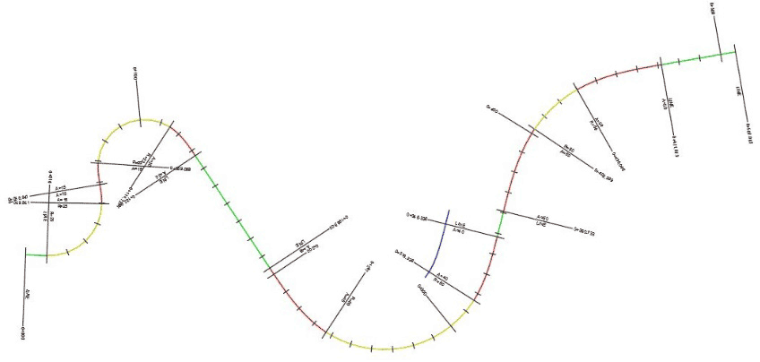

Using IfcOpenShell and C++ to generate Alignments through the IFC 4x1 schema
IfcOpenShell has an EXPRESS parser and code generator that generates code for the various IFC schemas. As part of the source code repository comes pre-generated code for the two widely used versions IFC2X3 and IFC4. But arbitrary schemas can be fed into the parser to provide support for other schemas at compile time. This post highlights the process of generating code for other schemas and talks about the recent developments within the IFC Alignment project._

We at aplitop are convinced of the added value that the BIM methodology will bring to linear construction works. Therefore, an important first step is the ability to share alignment files in the IFC format. The latest efforts within the IFC community are oriented towards this. IFC Alignment has been standardized in 2015, and work is continuing on IFC Road, IFC Bridge, ...
This information can be used to extend BIM models in roads, trains, and other civil works and provides the data model for 3D and 2D alignment information for the spatial location of infrastructure assets.
Overview slide presented in the buildingSmart Barcelona ’17 summit
Code generation procedure
The code generator can be ran manually on the IFC4x1 EXPRESS schema or alternatively, provide the schema to the CMake build process with the COMPILE_SCHEMA option. This folder contains Python code to generate C++ type information based on an Express schema. In particular it has only been tested using recent version of the IFC schema and will most likely fail on any other Express schema. It generates code that can decorate instances returned by the parser with type information. The generated schema classes are expected to include an IfcRoot class in order to be able to build a mapping of instances according to their GlobalId attributes. The code can be invoked in the way given below:
python bootstrap.py express.bnf > express_parser.py && python express_parser.py IFC4x1.exp
The first step generates code to read generic schemas in the EXPRESS modelling language by parsing its syntax in the "Backus–Naur form" (express.bnf). The code generated is the used to parse the IFC schema and results in 5 files being generated.
New entities in the IfcAlignment schema
The following entities are introduced. They are used to model linear spatially referenced construction works as illustrated in the figure on the right.
Graphical illustration of the attributes of an alignment in IFC. Source: Wijnholts 2016
- IfcTransitionCurveSegment2D
- IfcLineSegment2D
- IfcClothoidalArcSegment2D
- IfcCircularArcSegment2D
- IfcAlignment2DHorizontalSegment
- IfcAlignment2DHorizontal
- IfcAlignment2DVerSegParabolicArc
- IfcAlignment2DVerSegLine
- IfcAlignment2DVerticalSegment
- IfcAlignment2DVertical
- IfcAlignmentCurve
- IfcAlignment
Generated code
The IFC4X1 and more recent IFC4X3 schemas are, after this tutorial was written, now bundled with recent versions of IfcOpenShell.
Comments